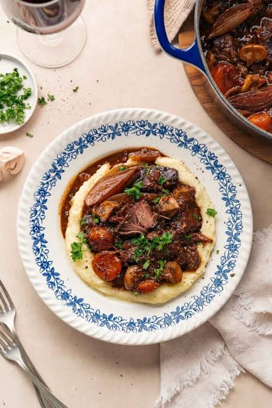

Bouef Bourguignon
To go back to the Index, Click Here

Boeuf Bourguignon
A rustic yet sophisticated traditional French stew from the Burgundy region. Tough cuts of beef are slowly braised in red wine and beef broth until meltingly tender, enriched by the earthy flavors of mushrooms, bacon, and pearl onions.
Ingredients
- 1kg beef chuck (cut into large cubes)
- 1 bottle Burgundy red wine (or Pinot Noir)
- 150g thick-cut bacon (cut into lardons)
- 200g pearl onions (peeled)
- 200g white button mushrooms (quartered)
- 2 carrots (sliced)
- 2 cups beef broth
- Bouquet garni (fresh thyme and a bay leaf tied together)
Steps
- Cook the bacon lardons in a large Dutch oven until the fat renders, then remove the bacon.
- Sear the beef chunks in the bacon fat over high heat until browned on all sides, then set them aside.
- Sauté the sliced carrots and half of the onions in the remaining fat until slightly softened.
- Pour in the red wine to deglaze the pot, scraping up the browned bits from the bottom.
- Return the beef and bacon to the pot, pour in the beef broth, add the bouquet garni, and bring to a simmer.
- Cover and transfer the pot to a 150°C (300°F) oven for 3 hours.
- While the stew cooks, separately sauté the pearl onions and mushrooms in a little butter, stirring them into the stew just before serving.